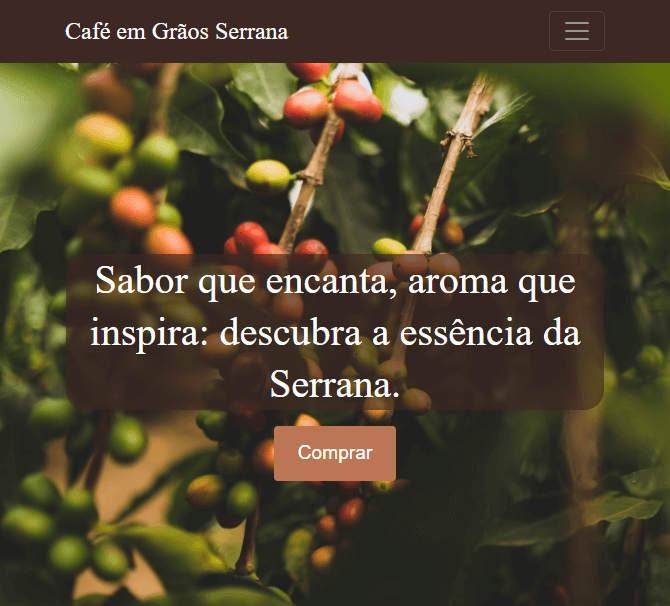
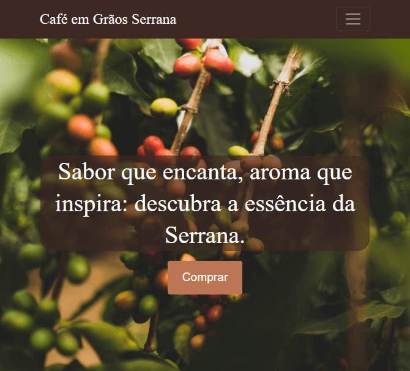

Café Serrana
O site da Café Serrana foi projetado para ser uma landing page de produto fictício de café em grãos. Tem um desing responsivo, assim como um HTML semântico e acessível. Foram utlizados apenas HTML5, CSS3 e JavaScript.
Olá, meu nome é
Navegue pelo meu site para saber mais sobre mim e os projetos nos quais tenho trabalhado.

Sou apaixonado por criar soluções inovadoras e atraentes que proporcionem uma experiência incrível para os usuários. Atualmente, estou aprimorando minhas habilidades em HTML, CSS e JavaScript. Além disso, estou estudando sobre o uso de frameworks e APIs.
Além do desenvolvimento web, sou um entusiasta da tecnologia e estou sempre em busca de aprender novas habilidades e explorar as últimas tendências. Quando não estou codificando, gosto de passar meu tempo livre com meus hobbies favoritos, que são livros, filmes, séries e jogos. Também tenho uma rotina diária de atividades físicas, tanto na academia quanto ao ar livre.
Estou ansioso para continuar minha jornada de aprendizado e me tornar um profissional altamente qualificado na área de desenvolvimento web. Confira meu portfólio para ver exemplos de meus projetos e habilidades. Se quiser entrar em contato comigo, sinta-se à vontade para me enviar uma mensagem na seção de contato ou em qualquer uma das redes sociais aqui dispostas.
Domínio das tags HTML5, criação de estrutura e semântica de páginas web, uso de elementos de formulário, integração de mídia, navegação, acessibilidade e técnicas de SEO. Clique aqui para ver o certificado.
Experiência com CSS3, incluindo seletores, pseudo-elementos e pseudo-classes, propriedades de estilo, design responsivo com media queries, posicionamento (flexbox e grid) e variáveis CSS. Clique aqui para ver o certificado.
Conhecimento em JavaScript, incluindo sintaxe e estruturas básicas (variáveis, funções, loops, condicionais e eventos), manipulação do DOM e ES6+. Clique aqui para ver o certificado.
Experiência com o sistema de versionamento Git, incluindo comandos básicos. Entendimento de boas práticas de fluxo de trabalho, como GitFlow e colaboração com outros desenvolvedores usando plataformas como GitHub. Clique aqui para ver o certificado.
Aqui estão meus principais projetos, apresentados em ordem de complexidade e cronológica. Para acessar e conferir qualquer um deles, basta clicar sobre sua imagem!
O site da Café Serrana foi projetado para ser uma landing page de produto fictício de café em grãos. Tem um desing responsivo, assim como um HTML semântico e acessível. Foram utlizados apenas HTML5, CSS3 e JavaScript.
Mais projetos estão a caminho e logo mais serão adicionados!

Caso queira entrar em contato comigo, basta preencher o formulário abaixo. Além disso, sinta-se livre para enviar uma mensagem em qualquer uma das redes aqui dispostas.